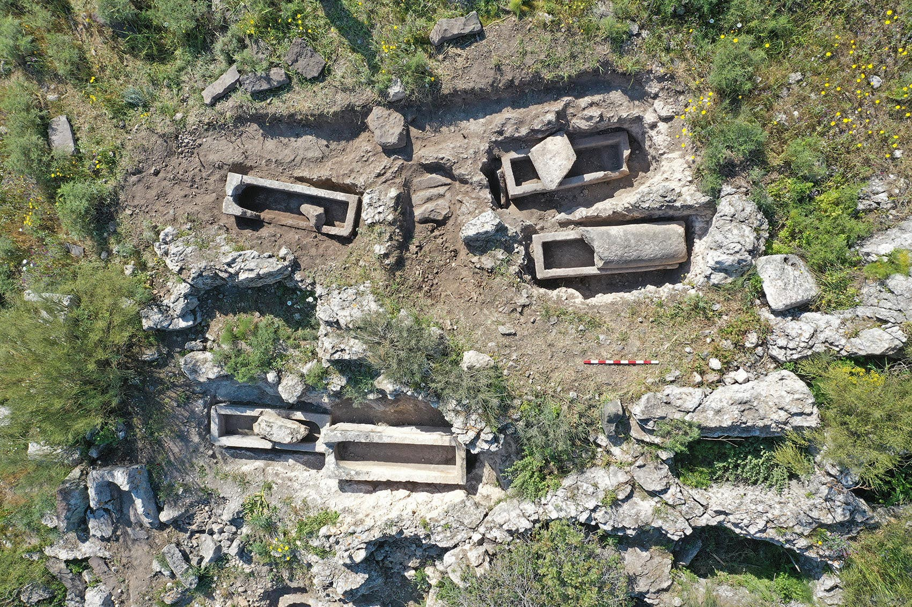
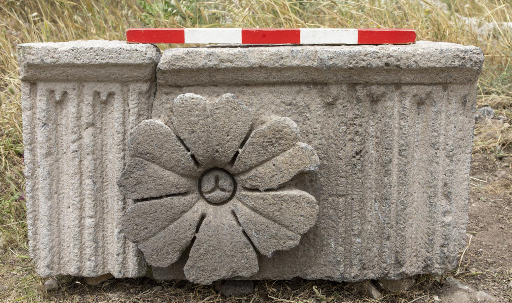

Excavating Hippos and the Last Roman Theater in the World
Perched on a small plateau, the townspeople of Hippos had a spectacular view of the Sea of Galilee hundreds of meters below.Not that they could see if from the recently identified Roman theater built down the hillside.Oddly enough, the seating was oriented toward the setting sun, the archaeologists excavating the site have deduced.
Hippos has a highly unusual Roman theater in the sense that the auditorium was oriented to the southwest, avers Dr.Michael Eisenberg of the Hippos Excavations Project, which is affiliated to the Zinman Institute of Archaeology at the University of Haifa.He has been co-leading the city’s excavation since 2000, in recent years with co-director Dr. Arleta Kowalewska.
Hippos is part of the Sussita National Park that is managed by the Israel Nature and Parks Authority.The hilltop city connects with the environs only via a narrow 'saddle' ridge.
Why the locals made the choice to build the theater facing the sunset remains somewhat puzzling, but the archaeological team is confident it has located the theater.
Maybe it specialized in matinees?Or maybe it was devoted not to the thespian arts but to worship at the large pagan cultic compound erected right by it during the town’s heyday in the early second century?In any case: 'It is a Roman theater in its full sense,' Eisenberg assures Haaretz.'It’s part of the compound built on the saddle, most likely a sanctuary to the rustic gods, possibly Dionysus,' he says.That compound was also built in the second century.
He adds that his co-director Kowalewska doesn’t agree regarding the nature of the compound, noting that no temple or altar has been found there – yet, at least.
A layperson braving the 'No entry' sign on the road to the site will see little of the new discoveries on the slope.In the spring after a rainy winter, the stage and seating of the theater look like a field of wildflowers on a slope studded by ruins, isolated blocks hewn from the local basalt, and some still-standing walls.Unlike modern contractors, the Romans built for the ages.
The archaeologists, on the other hand, can even identify the theater’s stage – more flowers, weeds and stones to us iggies; and the half-circle of the orchestra, for which the excavators found the foundation.
Based on discoveries so far, the stage was highly ornamented in the Roman taste, with relatively ornate granite and marble columns.They hope to find seats and statues when they continue to dig there, one day.This theater in Hippos may have seated as many as 3,500 people – and is the last identified Roman theater in the world, Eisenberg says.
Perhaps the truly extraordinary thing isn’t the view of the sunset.It’s that, the archaeologists realized, they had found a second theater built atop an old one.Eisenberg is confident that it postdates 363, the year of the earthquake that destroyed much of the Galilee, though Hippos itself – damaged but not flattened – would soldier on for several more centuries.
The team almost missed the earlier phase of the theater because, having discovered the younger one’s foundations, they weren’t planning to excavate below that.But driven by a hunch, they did exactly that, where they found what Eisenberg calls 'the original' (first phase) theater.
The excavators also found marble slab flooring of the later theater, but covered it up for the nonce.'We’d need national enterprise to continue excavating there,' Eisenberg tells Haaretz.So don’t hold your breath.
Meanwhile, back in antiquity, if the entertainment at the theater was deadly, the townspeople didn’t have far to lug the bodies.
Grave robbers galore
The theater and sanctuary were built south of the hilltop, along the mountain’s saddle, over which passes the road into the city – along which the archaeologists found an extraordinary funerary depository for the city’s elite.
Elite?They were so removed from the hoi polloi that burial in the stony land or some simple gravestone was not for them.No, these people were laid to rest presumably in stone coffins, which were in turn placed on 13 large stone platforms right along the main drag.
Burial by the road into the city was a thing in the Classic world, for the sake of the posthumous aggrandizement of the dearly departed.'This had to be the most prime real estate in the city,' Eisenberg remarks.But nothing like these funerary podia for the dead have been found anywhere else, he says.
In general, Hippos had three depositories for the dead.Lesser folk would be interred in simple burial caves existing or dug into the friable sandstone hills south of the city.Looking at the slopes facing Hippos, one sees these burials all over the hillsides, among what look like molehills.They aren’t, though.
'Those dirt piles are the sign of robbery, of the simplest burials of people,' he explains.Basically nothing remains in these graves, which have not been dated.Eisenberg adds that the hillside graves weren’t dug in soil but in the local brownish-yellowish sandstone: 'It was relatively easy to quarry a meter deep, put papa’s body in, and cover with a basalt slab.'
For more money one could buy papa a nice sarcophagus, carved out of local basalt or limestone, and place it in a cut trench or in the open air in the second necropolis – which the team calls the Saddle Necropolis, which runs along the road to the town, he explains.Why saddle?Because of the topography: the road to the city runs through a saddle shape in the hilly land.
The Saddle Necropolis has been dated to the first century and later.It features lovely mausoleums (aka mausolea).One such is the so-called Flowers Mausoleum from the late first century, featuring floral carvings done in basalt.These are among the best ever found in Israel, he says, though some similar examples exist in the big cities of yore in Syria and Jordan.
Another extraordinary example of the local funerary art was the vast Lion’s Mausoleum, so named because of a lion statue found at the site.The mausoleumwas so grand it had as many as three stories, the team deduces.Both were destroyed in the 363 quake.
And if one was truly esteemed and presumably rich, one could have been laid to rest above ground, presumably in a sarcophagus but in the sight of all.The team counted at least 13 of these high platforms on the main drag, for which they coined the phrase 'funerary podia.'They were built in the first half of the first century, the Early Roman period.
Being unparalleled in the Roman world, Eisenberg believes these podia will attract historians and tourists from the world wide, as did the Jewish site of Beit She’arim, which features an extraordinary necropolis of tombs cut into the bedrock – about which much also remains to be elucidated.Such as when it’s from – apparently, the Roman period.It too had been profoundly robbed and was destroyed in 363.
Happily, like Beit She’arim, Hippos and its dead didn’t lose their dead to modern development, which all too many ancient sites have.Why?Because Beit She’arim and Hippos are off the beaten track, today at least.The main roads of today’s cities tend to take the same route as ancient roads, Eisenberg explains.
Also, the podia are built of soft ashlars that are sitting next to a small road: that may not have been the best kind of stone to reuse, he posits.
'Early 20th-century photographs of these podia piles reassure us that, indeed, no modern robbery of stone took place here,' he observes.
Hippos, however, is not a city today; it’s a ruin.And as said, there’s exactly one winding road into this hilltop town and it does not lend itself to camel trains – or armies.
A Hasmonean interlude
Known by its Greek name Antiocha-Hippos or its Aramaic name Sussita, the city was founded in the first half of the second century B.C.E. by the Seleucids – atop a steep hill 350 meters (about 1,150 feet) above the water level in the Sea of Galilee.It never was a Jewish town per se: it was pagan (Roman) and then Christian (Byzantine), though it had its Jewish minority.
The original town, a wee 200 by 600 meters in area, approximately, was originally surrounded by proper Roman fortification walls.Atop the hill, over the years archaeologists have found temples to the Roman gods, churches from the city’s later period, a paved marketplace, one bathhouse (wait for it…) and much more.
As the city grew, it spread from the flat hilltop to down the hill’s southern slope – the only place it really could expand.Small as it was, Hippos was a proper Roman polis: a tiny city-state, the only one on this side of the Sea of Galilee.The whereabouts of its theater, as any self-respecting Greco-Roman town must have, had been a mystery that the archaeologists solved in 2016, even if its orientation remains bewildering.Maybe then as now, some builders will tell you any fairy story.
Anyway, Hippos weathered the Jewish-Roman wars despite being captured by Jewish forces twice, once by the Hasmonean king Alexander Jannaeus.The city was only repeopled after Pompey took the region back in 63.
However, as feelings ran high, Romans persecuted the Jewish minority living in Hippos, according to the Jewish-Roman historian Josephus.
Josephus, who lived in the first century, was positioned to know.'He was involved in the great revolt in the Galilee,' Eisenberg points out, adding that the Jewish commander-turned-Roman historian described Roman army practices and machinery.
Among the information we glean from him and Philon of Alexandria is how to besiege a city, the optimal size of ballista balls, and so on.For the attackers, a distance of 200 meters or more from the gate being targeted was ideal.(Three hundred meters would also have been an effective range for ballistae and catapults, Eisenberg observes, but they didn’t have that kind of room on the approach to Hippos.)
Why was Hippos spared the wrath of the Jews?Taking the fortified hilltop would have been a mighty endeavor requiring a mobile tower, catapults and huge projectiles, a large army and a healthy dose of psychological warfare.Clearly somebody did try at some point, and Eisenberg thinks it was Alexander Jannaeus’ forces.The archaeologists found several ballista balls, each weighing 18 to 19 kilograms (40 to 42 pounds), on the southern slope.
How do we know some of them were shot by the enemy?They weren’t made of local stone, the archaeologist explains.
Also, the people of Hippos had dug a deep defensive ditch across that one access road to the city to prevent the enemy (the Jews of the Great Revolt and Jannaeus’ forces, presumably) from bringing their machines of war too near the city walls.
The archaeologists have even identified the platform where Hippos’ defenders placed their own heavy artillery, Eisenberg says: a 50-meter-long bastion, 'very unique and wonderful,' he says.And the Jews never did win the city.
Standing in the 'theater' looking down at where this ditch had been, one sees – flowers.Come the Pax Romana in the early second century, relieved of the fear of conquest, Hippos could allow the ditch to do what ditches do: fill up with debris.
'In the second century, some of the forts were still maintained, but the parts like that 50-meter-long bastion, the projectile position, wasn’t needed anymore.So it was replaced by a bathhouse,' he explains.'There was no enemy anymore.The Jews were exiled, gone, and those who remained were a weak force.The Bar Kochba revolt, the second Jewish rebellion, didn’t affect the north region.They had nobody to fear.'
The Roman town of Beit She’an, for example – called Nysa-Scythopolis during the Roman period – never even bothered to build fortifications, he notes.And once peace had come, some, like Hippos, turned their forts and fortifications into civic buildings.
Meeting with Legion
The second century evidently brought prosperity to little Hippos on the Hill.That is when the city erected a monumental gate to the saddle sanctuary, eventually leading to the theater.The gate was flanked by two tall towers, more than 8 meters in height and each 6.5 by 6.5 meters in area.Their design was simple, as befit the times: 50 years later it might have been more ornate, Eisenberg thinks.
It was on the plaster floor of the western tower gate that Eisenberg and the team found a bronze cast mask of the god Pan, in late 2014.
It was also in the second century that the city built the 170-meter-long sanctuary compound, and a second bathhouse, a monster of an edifice erected along the main road.Given its size, it likely served not only the populace but visiting merchants.
The archaeologists have identified its caldarium (hot room), the typical double floor and mosaics.It was fed by water piped to the city over a 24-kilometer-long aqueduct.
Lying weathered on the ground are monolithic basalt sections that had supported the aqueduct pressure pipelines from the first century, weathered but clearly identifiable.There had been over a thousand such drums in the past, Eisenberg says.
We don’t know what purpose it served, the archaeologists say.
But the Sea of Galilee sits smack in a giant rift zone.In the year 363, a massive earthquake struck.Hippos would survive, though large parts of the city were destroyed, and continue into the Byzantine period – from which time we find no less than seven churches.It survived even into the early Islamic time.
But none of the main public compound structures was rebuilt after that quake.Evidently, Eisenberg suggests, they didn’t have the money to do so.
At some point, whatever marbles graced the public buildings, such as tiles and the requisite statuary in the bathhouses (because limestone isn’t appropriate), disappeared.Roman marble was used in Byzantine construction and what was left was burned for lime in the early Islamic period.
And then in 749 there was another massive quake, and that did for the city once and for all.
Even bereft of its treasures, the ruins of Hippos are magnificent, the site gorgeous, and once the funerary podia are better excavated and restored – and maybe that wacky theater too, to some extent – it could be a serious contender for international tourism, competing with not-far-away Megiddo, where the regional council intends to build a vast 'Armageddon Park' tourism experience.
One snag is that, right now, the road leading to Hippos is blocked to traffic (by that sign, nothing more concrete).But Eisenberg is confident Hippos will hold its own even against the multiple magnets of Megiddo and recalcitrant road builders.If any town can be touted as a place where Jesus walked, it’s probably Hippos, he contends – not least because, the archaeologist suspects, this is where Jesus carried out the 'Miracle of the Swine,' transferring demons (the said 'legion') from possessed person/s into pigs, which reportedly cast themselves off a cliff into the Sea of Galilee.
And where do we have suitable environs for that?Perhaps less at Kursi, a mere 5 kilometers north, though it does have a hill, but at Hippos – a Roman town, not a Jewish one, perched atop proper cliffs.Hippos is on the eastern side of the lake, where the majority of Jesus’ ministry took place, and it’s the only Christian city above the lake, Eisenberg adds.Remains of pigs have been found in the town.Is that proof?Not a shred.But it’s an intriguing theory.
Posted On: 2021-05-14T00:00:00


Content Date: 2021-05-14
Download Date: 2021-05-19
Document ID: L0C04CICQ